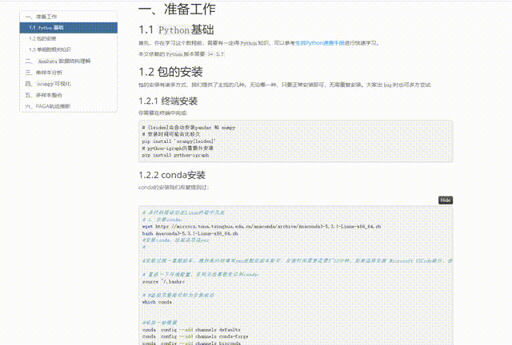
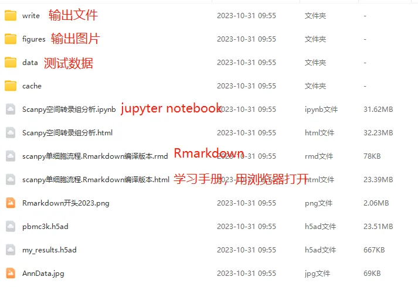
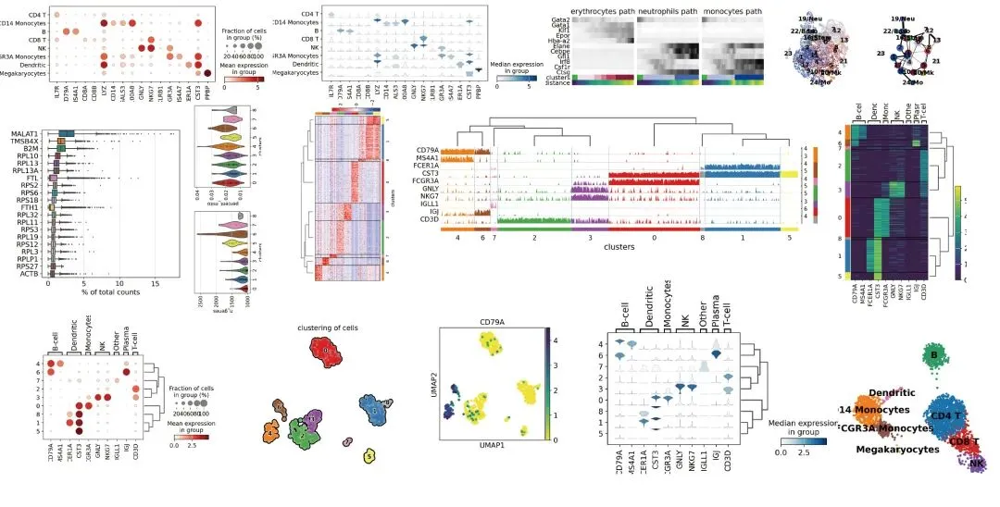

scRNA-Seq学习手册Python版
原文：https://mp.weixin.qq.com/s?__biz=MzAwMzIzOTk5OQ==&mid=2247504877&idx=2&sn=2b56a9cfa19fcc918ee6c2ed88fed017&chksm=9b3caabdac4b23ab6e28425a4a5eb4d40ee3612e51f84f5d1e53ac91bef93f717e9e754398e3#rd 合集：单细胞教程全收录

学习手册

 我们B站的十八万播放量的单细胞教程是基于R语言 实现的。因此这里我们再整理一个scRNA-Seq学习手册的Python版(基于scanpy)，包含"准备工作"、"Anndata数据结构理解"、"单样本分析"、"scanpy可视化"、"多样本整合"、"PAGA轨迹推断"共六个章节。文末下载链接包含代码、学习手册、测试文件和输出结果。希望该手册可以帮助大家完成Python环境中单细胞基础分析的一站式学习，学习手册的演示可以看如下动图，翻阅起来比较方便：
我们B站的十八万播放量的单细胞教程是基于R语言 实现的。因此这里我们再整理一个scRNA-Seq学习手册的Python版(基于scanpy)，包含"准备工作"、"Anndata数据结构理解"、"单样本分析"、"scanpy可视化"、"多样本整合"、"PAGA轨迹推断"共六个章节。文末下载链接包含代码、学习手册、测试文件和输出结果。希望该手册可以帮助大家完成Python环境中单细胞基础分析的一站式学习，学习手册的演示可以看如下动图，翻阅起来比较方便：

文末下载资料包含测试数据、单细胞 学习手册、输出文件、输出图片、标记语言文件(jupyter notebook和Rmarkdown，感兴趣的同学也可以点开学一学咱们的手册是怎么制作出来的)以及scanpy的空间转录组学习 手册：

学习手册中的主要输出图片可参考：

当然，也更推荐大家直接在scanpy的官网学习： https://scanpy.readthedocs.io/en/latest/_tutorials.html
-Biomamba


文末还可解锁以下内容


公众号至今的573篇推送中，刚好有20篇付费内容，联系文末微信可以以119￥获取全部资料(包括今年后面更新的内容)。当然，付费不是目的，以下资料都可以通过转发领取(更推荐这种方式)。
2022资料合辑(重置链接) scRNA-Seq学习手册2023_R语言版一文搞定拟时序分析的下游可视化探索 Seurat中如何让细胞听你指挥 《拟时序分析》3.monocle2实操：完整版 一文搞定单细胞基因集评分 改造单细胞降维图| 2.ggplot2中的DIY 改造单细胞降维图| 3.3D降维图与动图绘制 一文搞定单细胞/空间转录组的WGCNA分析 SCENIC单细胞转录因子预测|2.学习手册生信Python速查手册 单细胞复写|3.急性心肌梗塞(AMI)外周血scRNA-Seq分析实战 SCENIC单细胞转录因子预测|4.精简版流程 《细胞通讯》2.CellChat基础分析教程 《细胞通讯》2.2CellChat多组别分析 《细胞通讯》CellChat学习手册 《拟时序分析》3.monocle2实操：完整版 ComplexHeatmap学习手册沉浸式统计细胞比例VlnPlot的ggplot改造

订阅后获取学习手册下载链接：